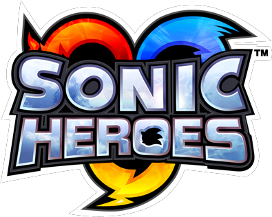

Com as diferentes adições e remoções nas versões lançadas depois, algumas pessoas preferem ter uma experiência mais fiel a original do Dreamcast.
Porém, o Dreamcast parou de ser produzido em 2001, fazendo jogar o jogo no hardware original algo difícil e caro.
Felizmente, emuladores fazem experiênciar a versão de Dreamcast muito mais acessivel, podendo usar todas as mecanicas do jogo original tanto no computador, tanto no celular.
A primeira aventura 3D marcou uma nova era para a franquia, com um maior foco em história e estilo de gameplay diferentes para todos os seis personagens jogáveis.
O jogo original rodava no Dreamcast, o console mais poderoso da época e que usava varios recursos do DirectX para seus efeitos visuais.
O Gamecube, console que teve o primeiro porte de SA1 não possuía esses recursos, resultando na remoção desses efeitos e outros bugs introduzidos como resultado.
Todos os portes subsequentes tiveram a versão do Gamecube como base, resultando em todos eles tem uma iluminação pior e mais bugs que a versão original.
A melhor forma de jogar Sonic Adventure 2 no celular e emular a versão de Dreamcast com o emulador REDREAM